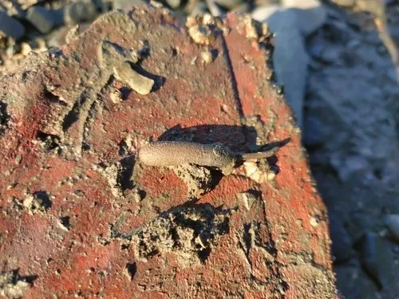

其他无脊椎动物 · 动物界
弓形革囊星虫 Phascolosoma arcuatum

体呈长囊状、吻端弯曲的星虫，栖于热带河口泥滩，掘洞而居，取食沉积物中的有机质，可食用。
- 分类
- 门星虫动物门纲革囊星虫纲目革囊星虫目科革囊星虫科属革囊星虫属
- 栖息环境
- 热带河口泥滩与红树林泥沙中，掘洞而居
- 地理分布
- 印度洋至西太平洋热带河口，中国南方沿海及东南亚
- 保护级别
- 常见种，无保护级别；过度采捕会影响滩涂种群
物种志
弓形革囊星虫的体长约五至十厘米，体呈长囊状，前端有一根可伸缩的吻，吻端弯曲成弓形，弓形之名由此而来。体壁厚实，呈灰褐至黄褐色，表面有细密纵纹和乳突。吻端有触手状构造，用于收集沉积物。它没有分节的体节，属于星虫动物门，与环节动物是两回事。
它分布于印度洋至西太平洋的热带河口泥滩，从东南亚到中国南方沿海，栖息在红树林和河口泥沙中，掘洞而居。它以吻端的触手收集泥沙中的有机质送入口中，是沉积食性动物。它在泥滩生态系统中数量较大，是鱼类和鸟类的食物，在中国南方和东南亚也被采捕食用，俗称沙虫或泥丁，采捕过度会影响滩涂生态。
形态与习性
- 体长约五至十厘米，长囊状
- 吻可伸缩，吻端弯成弓形
- 体壁厚实，灰褐至黄褐，有纵纹与乳突
- 食性以触手收集泥沙中有机质
- 栖息河口泥滩与红树林，掘洞而居
- 利用南方俗称沙虫或泥丁，可食用
趣味知识
- 它没有体节，也不属于蚯蚓那一类，而是独立的星虫动物门。
- 它的吻能弯成弓，伸出去把泥一口口收回来筛着吃。
- 南方沿海把它叫沙虫，煮汤鲜甜，采挖的人要趁退潮。